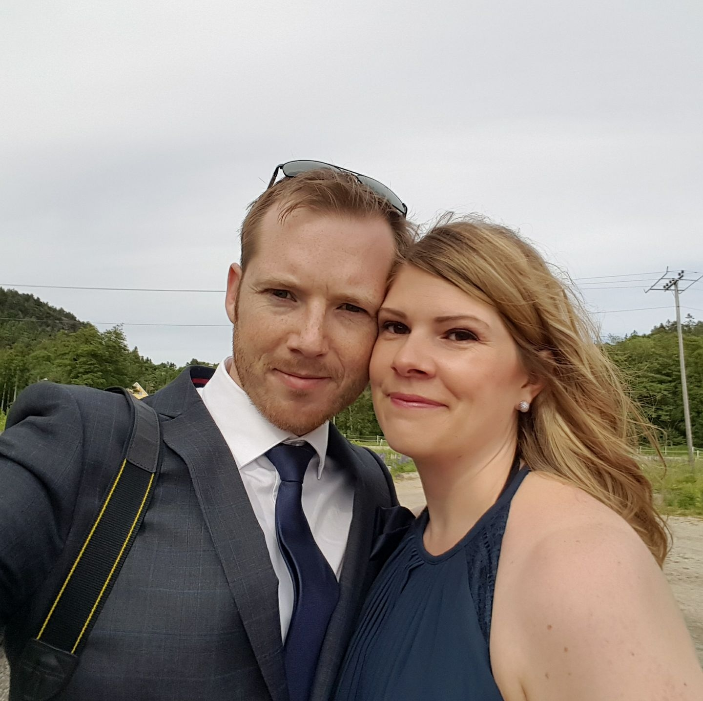
Webpresentasjon, ikke PowerPoint
Ken Andersen
Familie, teknologi, nysgjerrighet og en god porsjon “bare vent til du ser neste klikk”.
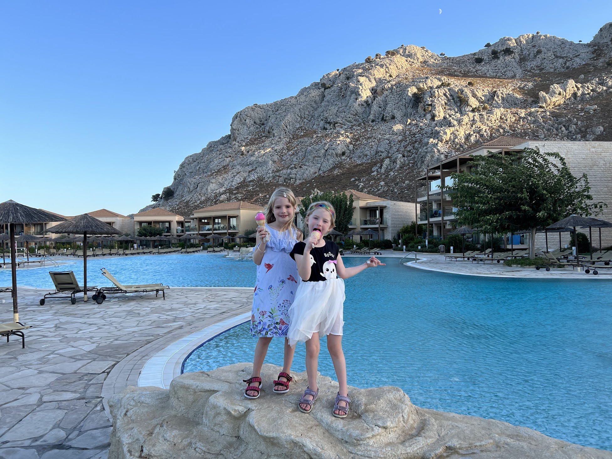
Familien
De beste øyeblikkene.
Ferier, iskrem, basseng og små historier som blir store etterpå.
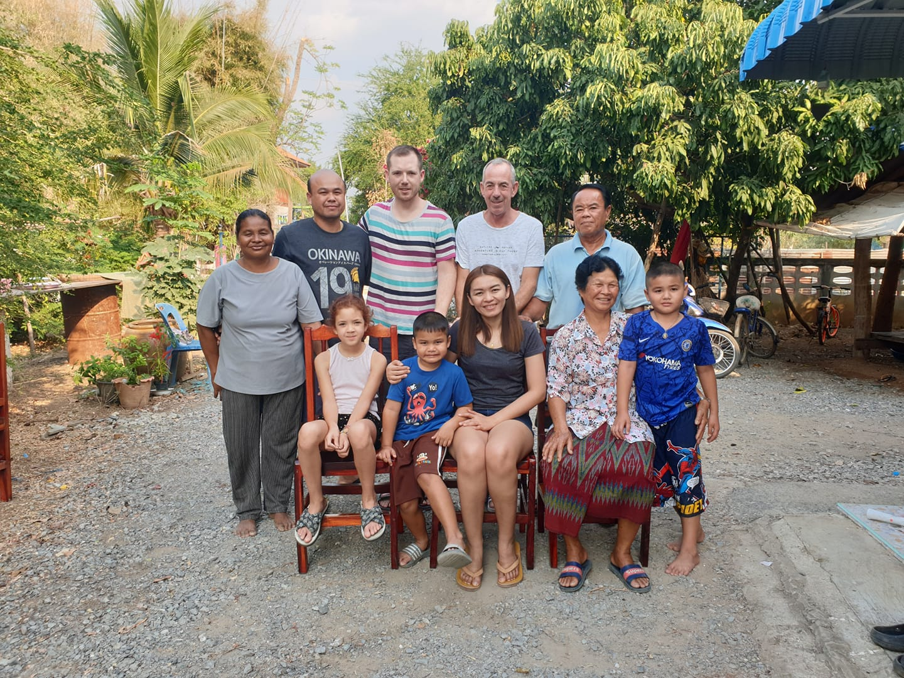
Thailand
Storfamilien.
Familien vokser
Får snart et ekstra familiemedlem.
Gleder oss veldig.
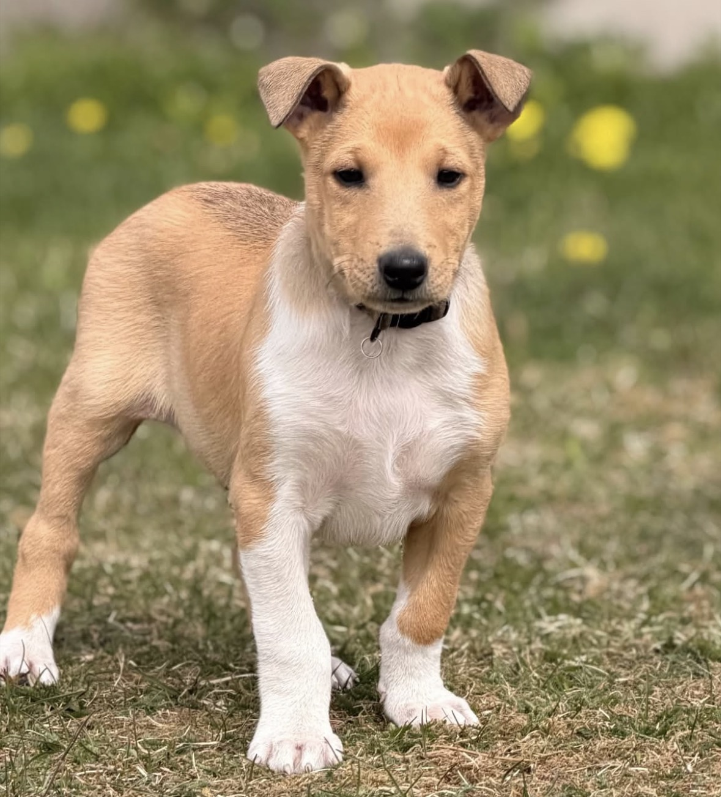
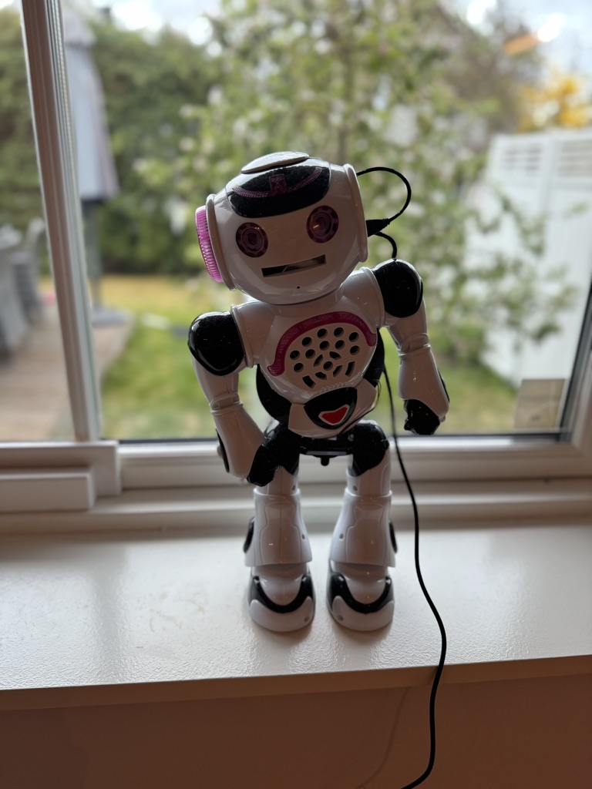
Hobbyer
Her er “flagrebot”.
Hun var en gang en leketøysrobot som tilhørte jentene, men nå har jeg adoptert den. Jeg fikk lov av jentene.
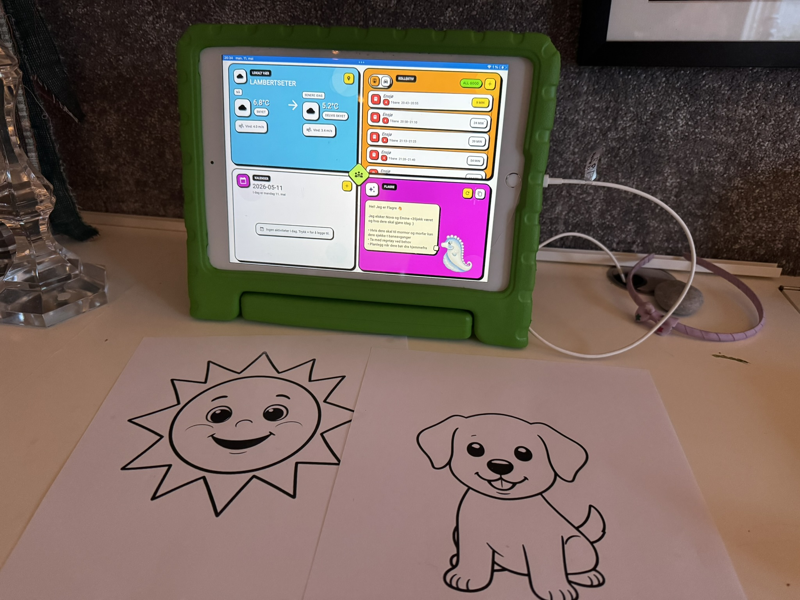
Kveldsfikling
Liker å fikle med litt utvikling på kveldene.
Gaming
Minecraft med familien.
Det er noe fint med et spill der alle kan bygge, utforske, rote seg bort og finne hjem igjen sammen.

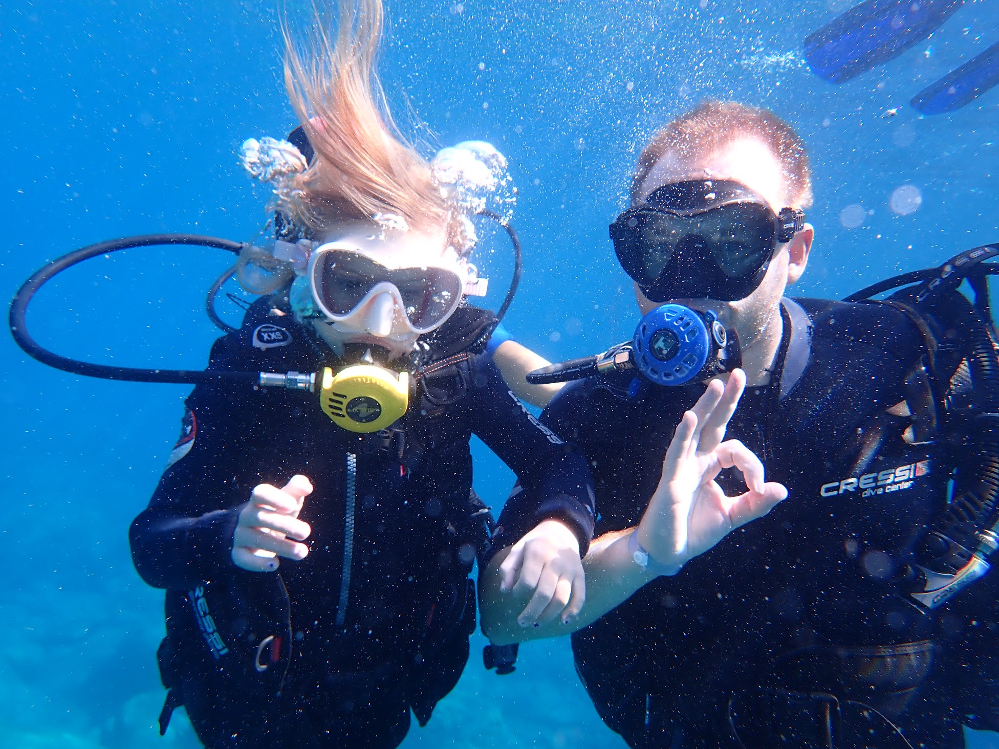
Aktivitet
Best når det skjer noe.
Trening, løping, sykling, svømming, ski og dykk. Jeg liker fremdrift både i kroppen og i hodet.
Favorittfilm
The Matrix
En ganske presis advarsel om at virkeligheten kan være mer formbar enn vi liker å innrømme.
$ wake up, Ken
> follow the curiosity
> build the thing
> presentation.mode = "alive"
Tøyseslide
CV-en før den ble LinkedIn-vennlig.
Noen jobber bygger kompetanse. Andre bygger karakter. Noen bygger mest historier.
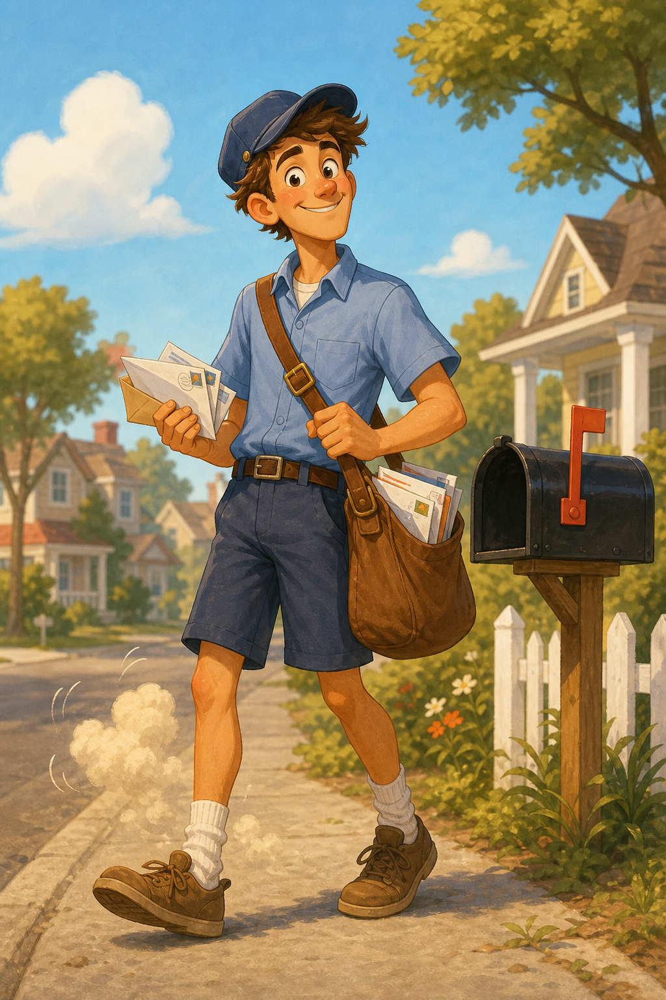
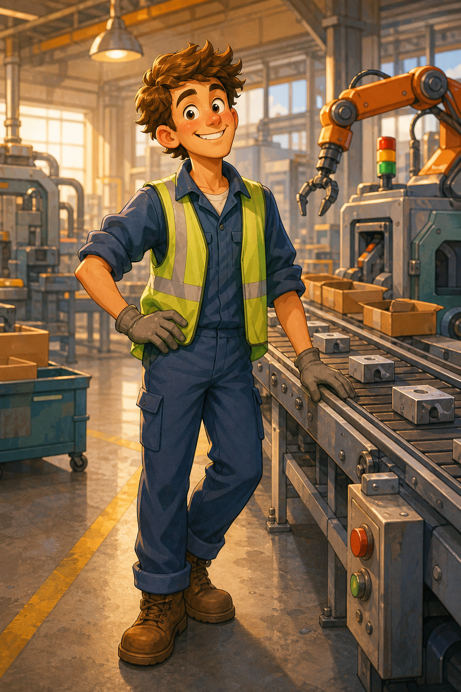
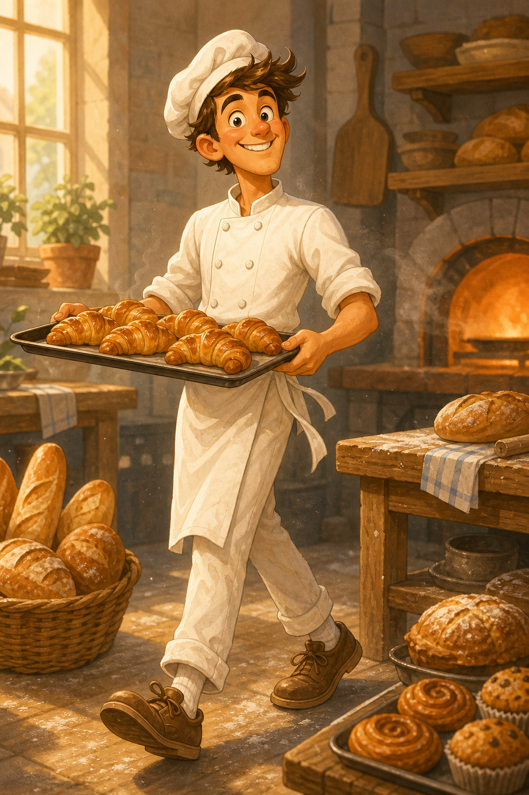
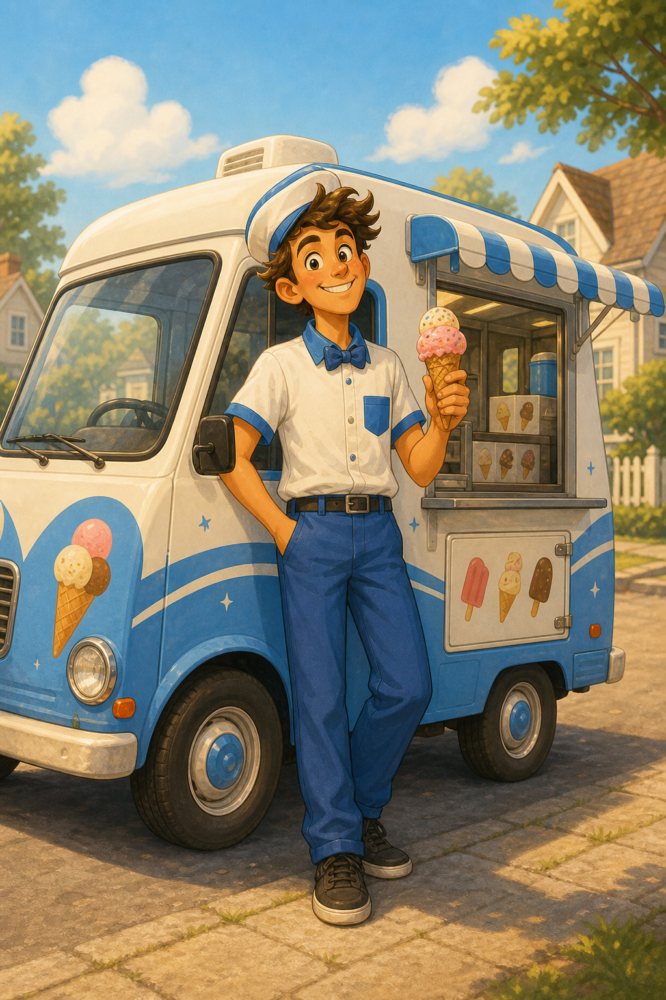
Profesjonelt
Digital transformasjon uten tåkeprat.
Jeg liker å gjøre digitale muligheter forståelige, nyttige og gjennomførbare. Innovasjon er best når den faktisk flytter mennesker, prosesser og beslutninger.
Samarbeid
strategi
produkt
KI
endring
data
gjennomføring
plattform
it drift
innovasjon
kultur
kommunikasjon
Karriere
Fra drift til endring.
Erfaring fra miljøer der teknologi må fungere i praksis, ikke bare i presentasjoner.
Fleip eller fakta?